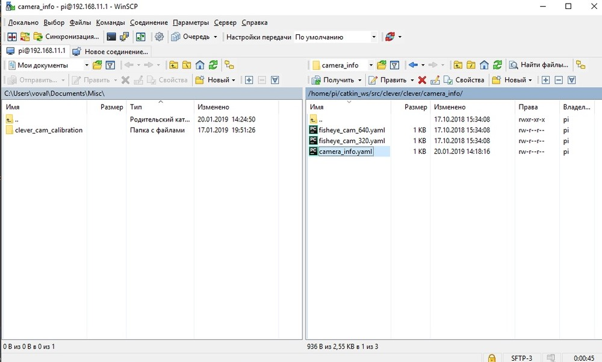
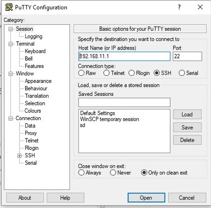
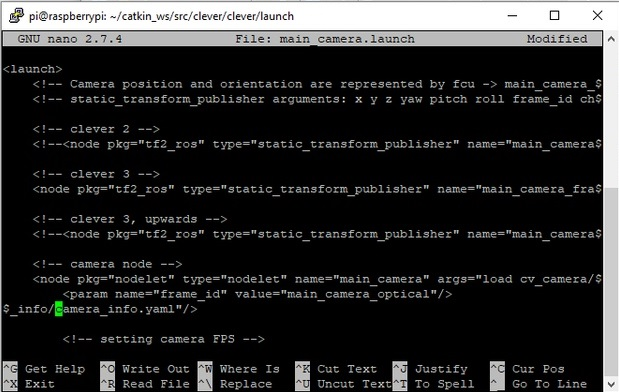

Калибровка камеры
Компьютерное зрение получает все более широкое распространение. Зачастую, алгоритмы компьютерного зрения работают неточно, получая искаженное изображение с камеры, что особенно характерно для fisheye-камер.

Изображение "скруглено" ближе к краям.
Какой-либо алгоритм компьютерного зрения будет воспринимать информацию с этой картинки неправильно. Для устранения подобных искажений камера, получающая изображения, должна быть откалибрована в соответствии со своими особенностями.
Установка скрипта
Для начала, необходимо установить необходимые библиотеки:
pip install numpy
pip install opencv-python
pip install glob
pip install pyyaml
pip install urllib.request
Затем скачиваем скрипт из репозитория:
git clone https://github.com/tinderad/clever_cam_calibration.git
Переходим в скачанную папку и устанавливаем скрипт:
cd clever_cam_calibration
sudo python setup.py build
sudo python setup.py install
Если вы используете Windows, тогда скачайте архив из репозитория, распакуйте его и установите:
cd path\to\archive\clever_cam_calibration\
python setup.py build
python setup.py install
path\to\archive - путь до распакованного архива.
Подготовка к калибровке
Вам необходимо подготовить калибровочную мишень. Она представляет собой «шахматную доску». Файл можно взять отсюда.
Наклейте распечатанную мишень на любую твердую поверхность. Посчитайте количество пересечений в длину и в ширину доски, измерьте размер клетки (в мм).

Включите Клевер и подключитесь к его Wifi.
Перейдите на 192.168.11.1:8080 и проверьте, получает ли компьютер изображения из топика image_raw.
Калибровка
Запустите скрипт calibrate_cam:
Windows:
>path\to\python\Scripts\calibrate_cam.exe
path\to\Python - путь до директории Python
Linux:
>calibrate_cam
Задайте параметры доски:
>calibrate_cam
Chessboard width: # Перекрестий в ширину
Chessboard height: # Перекрестий в длину
Square size: # Длина ребра клетки (в мм)
Saving mode (YES - on): # Режим сохранения
Режим сохранения: если включен, то все полученные фотографии будут сохраняться в нынешней директории.
Скрипт начнет свою работу:
...
Calibration started!
Commands:
help, catch (key: Enter), delete, restart, stop, finish
Чтобы откалибровать камеру, вам требуется сделать как минимум 25 фото шахматной доски с различных ракурсов.

Чтобы сделать фото, введите команду catch.
>catch
Программа будет информировать вас о состоянии калибровки.
...
Chessboard not found, now 0 (25 required)
> # Enter
---
Image added, now 1 (25 required)
Вместо того, чтобы каждый раз вводить команду , Вы можете просто нажимать клавишу Enter (вводить пустую строку).
После того, как будет набрано достаточное количество изображений, введите команду finish.
...
>finish
Calibration successful!
Калибровка по существующим изображениям:
Если же у вас уже есть изображения, то вы можете откалибровать камеру по ним при помощи скрипта calibrate_cam_ex.
>calibrate_cam_ex
Указываем характеристики мишени, а так же путь до папки с изображениями:
>calibrate_cam_ex
Chessboard width: # Перекрестий в ширину
Chessboard height: # Перекрестий в длину
Square size: # Длина ребра клетки (в мм)
Path: # Путь до папки с изображениями
В остальном этот скрипт работает аналогично calibrate_cam.
Программа обработает все полученные фотографии, и создаст файл camera_info**.**yaml в нынешней директории. При помощи этого файла можно будет выравнивать искажения на изображениях, полученных с этой камеры.
Если вы поменяете разрешение получаемого изображения, вам нужно будет снова калибровать камеру.
Исправление искажений
За получение исправленного изображения отвечает функция get_undistorted_image(cv2_image, camera_info):
- cv2_image: Закодированное в массив cv2 изображение.
- camera**__**_info**: Путь до файла калибровки.
Функция возвращает массив cv2, в котором закодировано исправленное изображение.
Если вы используете fisheye-камеру, поставляемую вместе с Клевером, то для обработки изображений разрешением 320x240 или 640x480 вы можете использовать уже существующие параметры калибровки. Для этого в качестве аргумента передайте параметры clever_cam_calibration.clevercamcalib.CLEVER_FISHEYE_CAM_320 или clever_cam_calibration.clevercamcalib.CLEVER_FISHEYE_CAM_640 соответственно.
Примеры работы
Изначальные изображения:
Иcправленные изображения:


Пример использования
Обработка потока изображений с камеры.
Данная программа получает изображения с камеры Клевера и выводит их на экран в исправленном виде, используя существующий калибровочный файл.
import clevercamcalib.clevercamcalib as ccc
import cv2
import urllib.request
import numpy as np
while True:
req = urllib.request.urlopen('http://192.168.11.1:8080/snapshot?topic=/main_camera/image_raw')
arr = np.asarray(bytearray(req.read()), dtype=np.uint8)
image = cv2.imdecode(arr, -1)
undistorted_img = ccc.get_undistorted_image(image, ccc.CLEVER_FISHEYE_CAM_640)
cv2.imshow("undistort", undistorted_img)
cv2.waitKey(33)
cv2.destroyAllWindows()
Использование для ArUco
Чтобы применить параметры калибровки к системе ArUco-навигации, требуется перенести калибровочный .yaml файл на Raspberry Pi Клевера и инициализировать его.
Не забудьте подключиться к WiFI Клевера.
Для передачи файла используется протокол SFTP. В данном примере используется программа WinSCP.
Подключимся к Raspberry Pi по SFTP:
Пароль: raspberry
Нажимаем “Войти”. Переходим в /home/pi/catkin_ws/src/clever/clever/camera_info/ и копируем туда калибровочный .yaml файл:

Теперь мы должны выбрать этот файл в конфигурации ArUco. Для этого используется связь по протоколу SSH. В данном примере используется программа PuTTY.
Подключимся к Raspberry Pi по SSH:

Войдем под логином pi и паролем raspberry, перейдем в директорию /home/pi/catkin_ws/src/clever/clever/launch и начнем редактировать конфигурацию main_camera.launch:
В строке camera node заменим параметр camera_info на camera_info.yaml:

Не забудьте изменить разрешение камеры.